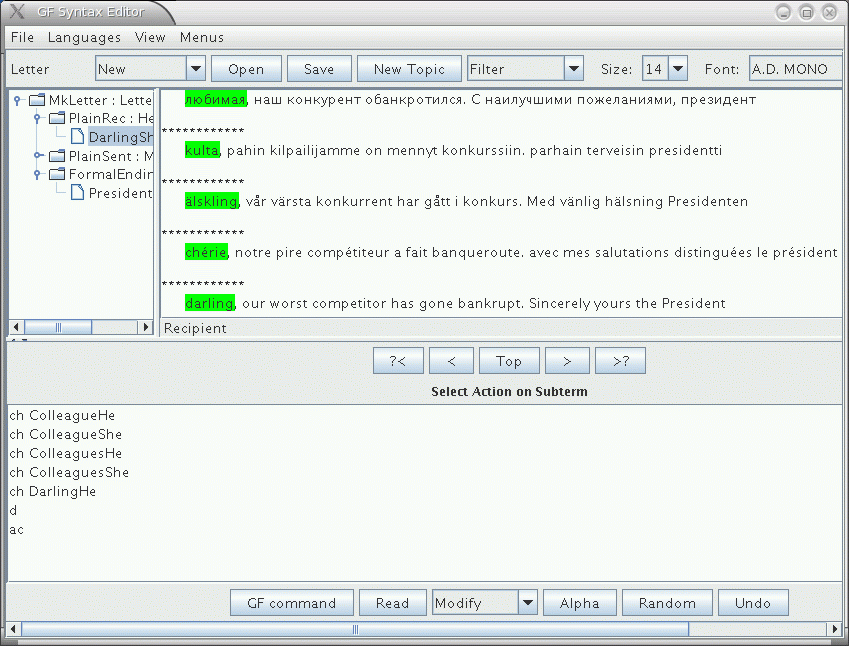

The term GF is used for different things:
This tutorial is primarily about the GF program and the GF programming language. It will guide you
A grammar is a definition of a language. From this definition, different language processing components can be derived:
A GF grammar can be seen as a declarative program from which these processing tasks can be automatically derived. In addition, many other tasks are readily available for GF grammars:
A typical GF application is based on a multilingual grammar involving translation on a special domain. Existing applications of this idea include
The specialization of a grammar to a domain makes it possible to obtain much better translations than in an unlimited machine translation system. This is due to the well-defined semantics of such domains. Grammars having this character are called application grammars. They are different from most grammars written by linguists just because they are multilingual and domain-specific.
However, there is another kind of grammars, which we call resource grammars. These are large, comprehensive grammars that can be used on any domain. The GF Resource Grammar Library has resource grammars for 10 languages. These grammars can be used as libraries to define application grammars. In this way, it is possible to write a high-quality grammar without knowing about linguistics: in general, to write an application grammar by using the resource library just requires practical knowledge of the target language. and all theoretical knowledge about its grammar is given by the libraries.
This tutorial is mainly for programmers who want to learn to write application grammars. It will go through GF's programming concepts without entering too deep into linguistics. Thus it should be accessible to anyone who has some previous programming experience.
A separate document has been written on how to write resource grammars: the Resource HOWTO. In this tutorial, we will just cover the programming concepts that are used for solving linguistic problems in the resource grammars.
The easiest way to use GF is probably via the interactive syntax editor. Its use does not require any knowledge of the GF formalism. There is a separate Editor User Manual by Janna Khegai, covering the use of the editor. The editor is also a platform for many kinds of GF applications, implementing the slogan
write a document in a language you don't know, while seeing it in a language you know.
The tutorial gives a hands-on introduction to grammar writing. We start by building a small grammar for the domain of food: in this grammar, you can say things like
this Italian cheese is delicious
in English and Italian.
The first English grammar
food.cf
is written in a context-free
notation (also known as BNF). The BNF format is often a good
starting point for GF grammar development, because it is
simple and widely used. However, the BNF format is not
good for multilingual grammars. While it is possible to
"translate" by just changing the words contained in a
BNF grammar to words of some other
language, proper translation usually involves more.
For instance, the order of words may have to be changed:
Italian cheese ===> formaggio italiano
The full GF grammar format is designed to support such changes, by separating between the abstract syntax (the logical structure) and the concrete syntax (the sequence of words) of expressions.
There is more than words and word order that makes languages different. Words can have different forms, and which forms they have vary from language to language. For instance, Italian adjectives usually have four forms where English has just one:
delicious (wine, wines, pizza, pizzas)
vino delizioso, vini deliziosi, pizza deliziosa, pizze deliziose
The morphology of a language describes the forms of its words. While the complete description of morphology belongs to resource grammars, this tutorial will explain the programming concepts involved in morphology. This will moreover make it possible to grow the fragment covered by the food example. The tutorial will in fact build a miniature resource grammar in order to give an introduction to linguistically oriented grammar writing.
Thus it is by elaborating the initial food.cf example that
the tutorial makes a guided tour through all concepts of GF.
While the constructs of the GF language are the main focus,
also the commands of the GF system are introduced as they
are needed.
To learn how to write GF grammars is not the only goal of this tutorial. We will also explain the most important commands of the GF system. With these commands, simple applications of grammars, such as translation and quiz systems, can be built simply by writing scripts for the system.
More complicated applications, such as natural-language
interfaces and dialogue systems, moreover require programming in
some general-purpose language. Thus we will briefly explain how
GF grammars are used as components of Haskell programs.
Chapters on using them in Java and Javascript programs are
forthcoming; a comprehensive manual on GF embedded in Java, by Björn Bringert, is
available in
http://www.cs.chalmers.se/~bringert/gf/gf-java.html.
The GF program is open-source free software, which you can download via the GF Homepage:
http://www.cs.chalmers.se/~aarne/GF
There you can download
If you want to compile GF from source, you need a Haskell compiler. To compile the interactive editor, you also need a Java compilers. But normally you don't have to compile, and you definitely don't need to know Haskell or Java to use GF.
We are assuming the availability of a Unix shell. Linux and Mac OS X users have it automatically, the latter under the name "terminal". Windows users are recommended to install Cywgin, the free Unix shell for Windows.
To start the GF program, assuming you have installed it, just type
% gf
in the shell.
You will see GF's welcome message and the prompt >.
The command
> help
will give you a list of available commands.
As a common convention in this Tutorial, we will use
% as a prompt that marks system commands
> as a prompt that marks GF commands
Thus you should not type these prompts, but only the lines that follow them.
Now you are ready to try out your first grammar. We start with one that is not written in the GF language, but in the much more common BNF notation (Backus Naur Form). The GF program understands a variant of this notation and translates it internally to GF's own representation.
To get started, type (or copy) the following lines into a file named
food.cf:
Is. S ::= Item "is" Quality ; That. Item ::= "that" Kind ; This. Item ::= "this" Kind ; QKind. Kind ::= Quality Kind ; Cheese. Kind ::= "cheese" ; Fish. Kind ::= "fish" ; Wine. Kind ::= "wine" ; Italian. Quality ::= "Italian" ; Boring. Quality ::= "boring" ; Delicious. Quality ::= "delicious" ; Expensive. Quality ::= "expensive" ; Fresh. Quality ::= "fresh" ; Very. Quality ::= "very" Quality ; Warm. Quality ::= "warm" ;
For those who know ordinary BNF, the notation we use includes one extra element: a label appearing as the first element of each rule and terminated by a full stop.
The grammar we wrote defines a set of phrases usable for speaking about food.
It builds sentences (S) by assigning Qualitys to
Items. Items are build from Kinds by prepending the
word "this" or "that". Kinds are either atomic, such as
"cheese" and "wine", or formed by prepending a Quality to a
Kind. A Quality is either atomic, such as "Italian" and "boring",
or built by another Quality by prepending "very". Those familiar with
the context-free grammar notation will notice that, for instance, the
following sentence can be built using this grammar:
this delicious Italian wine is very very expensive
The first GF command needed when using a grammar is to import it.
The command has a long name, import, and a short name, i.
You can type either
> import food.cf
or
> i food.cf
to get the same effect. The effect is that the GF program compiles your grammar into an internal representation, and shows a new prompt when it is ready. It will also show how much CPU time is consumed:
> i food.cf
- parsing cf food.cf 12 msec
16 msec
>
You can now use GF for parsing:
> parse "this cheese is delicious"
Is (This Cheese) Delicious
> p "that wine is very very Italian"
Is (That Wine) (Very (Very Italian))
The parse (= p) command takes a string
(in double quotes) and returns an abstract syntax tree - the thing
beginning with Is. Trees are built from the rule labels given in the
grammar, and record the ways in which the rules are used to produce the
strings. A tree is, in general, something easier than a string
for a machine to understand and to process further.
Strings that return a tree when parsed do so in virtue of the grammar you imported. Try parsing something else, and you fail
> p "hello world"
Unknown words: hello world
Exercise. Extend the grammar food.cf by ten new food kinds and
qualities, and run the parser with new kinds of examples.
Exercise. Add a rule that enables questions of the form is this cheese Italian.
Exercise. Add the rule
IsVery. S ::= Item "is" "very" Quality ;
and see what happens when parsing this wine is very very Italian.
You have just made the grammar ambiguous: it now assigns several
trees to some strings.
Exercise. Modify the grammar so that at most one Quality may
attach to a given Kind. Thus boring Italian fish will no longer
be recognized.
You can also use GF for linearizing
(linearize = l). This is the inverse of
parsing, taking trees into strings:
> linearize Is (That Wine) Warm
that wine is warm
What is the use of this? Typically not that you type in a tree at
the GF prompt. The utility of linearization comes from the fact that
you can obtain a tree from somewhere else. One way to do so is
random generation (generate_random = gr):
> generate_random
Is (This (QKind Italian Fish)) Fresh
Now you can copy the tree and paste it to the linearize command.
Or, more conveniently, feed random generation into linearization by using
a pipe.
> gr | l
this Italian fish is fresh
Pipes in GF work much the same way as Unix pipes: they feed the output of one command into another command as its input.
The gibberish code with parentheses returned by the parser does not
look like trees. Why is it called so? From the abstract mathematical
point of view, trees are a data structure that
represents nesting: trees are branching entities, and the branches
are themselves trees. Parentheses give a linear representation of trees,
useful for the computer. But the human eye may prefer to see a visualization;
for this purpose, GF provides the command visualizre_tree = vt, to which
parsing (and any other tree-producing command) can be piped:
> parse "this delicious cheese is very Italian" | vt

This command uses the programs Graphviz and Ghostview, which you might not have, but which are freely available on the web.
Random generation is a good way to test a grammar; it can also be fun. So you may want to generate ten strings with one and the same command:
> gr -number=10 | l
that wine is boring
that fresh cheese is fresh
that cheese is very boring
this cheese is Italian
that expensive cheese is expensive
that fish is fresh
that wine is very Italian
this wine is Italian
this cheese is boring
this fish is boring
To generate all sentence that a grammar
can generate, use the command generate_trees = gt.
> generate_trees | l
that cheese is very Italian
that cheese is very boring
that cheese is very delicious
that cheese is very expensive
that cheese is very fresh
...
this wine is expensive
this wine is fresh
this wine is warm
You get quite a few trees but not all of them: only up to a given
depth of trees. To see how you can get more, use the
help = h command,
> help gt
Exercise. If the command gt generated all
trees in your grammar, it would never terminate. Why?
Exercise. Measure how many trees the grammar gives with depths 4 and 5,
respectively. You use the Unix word count command wc to count lines.
Hint. You can pipe the output of a GF command into a Unix command by
using the escape ?, as follows:
> generate_trees | ? wc
A pipe of GF commands can have any length, but the "output type" (either string or tree) of one command must always match the "input type" of the next command.
The intermediate results in a pipe can be observed by putting the
tracing flag -tr to each command whose output you
want to see:
> gr -tr | l -tr | p
Is (This Cheese) Boring
this cheese is boring
Is (This Cheese) Boring
This facility is good for test purposes: for instance, you may want to see if a grammar is ambiguous, i.e. contains strings that can be parsed in more than one way.
Exercise. Extend the grammar food.cf so that it produces ambiguous strings,
and try out the ambiguity test.
To save the outputs of GF commands into a file, you can
pipe it to the write_file = wf command,
> gr -number=10 | l | write_file exx.tmp
You can read the file back to GF with the
read_file = rf command,
> read_file exx.tmp | p -lines
Notice the flag -lines given to the parsing
command. This flag tells GF to parse each line of
the file separately. Without the flag, the grammar could
not recognize the string in the file, because it is not
a sentence but a sequence of ten sentences.
To see GF's internal representation of a grammar
that you have imported, you can give the command
print_grammar = pg,
> print_grammar
The output is quite unreadable at this stage, and you may feel happy that you did not need to write the grammar in that notation, but that the GF grammar compiler produced it.
However, we will now start the demonstration
how GF's own notation gives you
much more expressive power than the .cf
format. We will introduce the .gf format by presenting
another way of defining the same grammar as in
food.cf.
Then we will show how the full GF grammar format enables you
to do things that are not possible in the context-free format.
A GF grammar consists of two main parts:
The context-free format fuses these two things together, but it is always possible to take them apart. For instance, the sentence formation rule
Is. S ::= Item "is" Quality ;
is interpreted as the following pair of GF rules:
fun Is : Item -> Quality -> S ;
lin Is item quality = {s = item.s ++ "is" ++ quality.s} ;
The former rule, with the keyword fun, belongs to the abstract syntax.
It defines the function
Is which constructs syntax trees of form
(Is item quality).
The latter rule, with the keyword lin, belongs to the concrete syntax.
It defines the linearization function for
syntax trees of form (Is item quality).
Rules in a GF grammar are called judgements, and the keywords
fun and lin are used for distinguishing between two
judgement forms. Here is a summary of the most important
judgement forms:
| form | reading |
cat C |
C is a category |
fun f : A |
f is a function of type A |
| form | reading |
lincat C = T |
category C has linearization type T |
lin f = t |
function f has linearization t |
We return to the precise meanings of these judgement forms later. First we will look at how judgements are grouped into modules, and show how the food grammar is expressed by using modules and judgements.
A GF grammar consists of modules, into which judgements are grouped. The most important module forms are
abstract A = M, abstract syntax A with judgements in
the module body M.
concrete C of A = M, concrete syntax C of the
abstract syntax A, with judgements in the module body M.
The nonterminals of a context-free grammar, i.e. categories, are called basic types in the type system of GF. In addition to them, there are function types such as
Item -> Quality -> S
This type is read "a function from iterms and qualities to sentences". The last type in the arrow-separated sequence is the value type of the function type, the earlier types are its argument types.
The linearization type of a category is a record type, with zero of more fields of different types. The simplest record type used for linearization in GF is
{s : Str}
which has one field, with label s and type Str.
Examples of records of this type are
{s = "foo"}
{s = "hello" ++ "world"}
Whenever a record r of type {s : Str} is given,
r.s is an object of type Str. This is
a special case of the projection rule, allowing the extraction
of fields from a record:
{ ... p : T ... } then r.p : T
The type Str is really the type of token lists, but
most of the time one can conveniently think of it as the type of strings,
denoted by string literals in double quotes.
Notice that
"hello world"
is not recommended as an expression of type Str. It denotes
a token with a space in it, and will usually
not work with the lexical analysis that precedes parsing. A shorthand
exemplified by
["hello world and people"] === "hello" ++ "world" ++ "and" ++ "people"
can be used for lists of tokens. The expression
[]
denotes the empty token list.
To express the abstract syntax of food.cf in
a file Food.gf, we write two kinds of judgements:
cat judgement.
fun judgement,
with the type formed from the nonterminals of the rule.
abstract Food = {
cat
S ; Item ; Kind ; Quality ;
fun
Is : Item -> Quality -> S ;
This, That : Kind -> Item ;
QKind : Quality -> Kind -> Kind ;
Wine, Cheese, Fish : Kind ;
Very : Quality -> Quality ;
Fresh, Warm, Italian, Expensive, Delicious, Boring : Quality ;
}
Notice the use of shorthands permitting the sharing of the keyword in subsequent judgements,
cat S ; Item ; === cat S ; cat Item ;
and of the type in subsequent fun judgements,
fun Wine, Fish : Kind ; ===
fun Wine : Kind ; Fish : Kind ; ===
fun Wine : Kind ; fun Fish : Kind ;
The order of judgements in a module is free.
Exercise. Extend the abstract syntax Food with ten new
kinds and qualities, and with questions of the form
is this wine Italian.
Each category introduced in Food.gf is
given a lincat rule, and each
function is given a lin rule. Similar shorthands
apply as in abstract modules.
concrete FoodEng of Food = {
lincat
S, Item, Kind, Quality = {s : Str} ;
lin
Is item quality = {s = item.s ++ "is" ++ quality.s} ;
This kind = {s = "this" ++ kind.s} ;
That kind = {s = "that" ++ kind.s} ;
QKind quality kind = {s = quality.s ++ kind.s} ;
Wine = {s = "wine"} ;
Cheese = {s = "cheese"} ;
Fish = {s = "fish"} ;
Very quality = {s = "very" ++ quality.s} ;
Fresh = {s = "fresh"} ;
Warm = {s = "warm"} ;
Italian = {s = "Italian"} ;
Expensive = {s = "expensive"} ;
Delicious = {s = "delicious"} ;
Boring = {s = "boring"} ;
}
Exercise. Extend the concrete syntax FoodEng so that it
matches the abstract syntax defined in the exercise of the previous
section. What happens if the concrete syntax lacks some of the
new functions?
GF uses suffixes to recognize different file formats. The most important ones are:
.gf = file name
.gfc file.
Import FoodEng.gf and see what happens:
> i FoodEng.gf
- compiling Food.gf... wrote file Food.gfc 16 msec
- compiling FoodEng.gf... wrote file FoodEng.gfc 20 msec
The GF program does not only read the file
FoodEng.gf, but also all other files that it
depends on - in this case, Food.gf.
For each file that is compiled, a .gfc file
is generated. The GFC format (="GF Canonical") is the
"machine code" of GF, which is faster to process than
GF source files. When reading a module, GF decides whether
to use an existing .gfc file or to generate
a new one, by looking at modification times.
Exercise. What happens when you import FoodEng.gf for
a second time? Try this in different situations:
empty (e), which clears the memory
of GF.
FoodEng.gf, be it only an added space.
Food.gf.
The main advantage of separating abstract from concrete syntax is that one abstract syntax can be equipped with many concrete syntaxes. A system with this property is called a multilingual grammar.
Multilingual grammars can be used for applications such as
translation. Let us build an Italian concrete syntax for
Food and then test the resulting
multilingual grammar.
concrete FoodIta of Food = {
lincat
S, Item, Kind, Quality = {s : Str} ;
lin
Is item quality = {s = item.s ++ "è" ++ quality.s} ;
This kind = {s = "questo" ++ kind.s} ;
That kind = {s = "quello" ++ kind.s} ;
QKind quality kind = {s = kind.s ++ quality.s} ;
Wine = {s = "vino"} ;
Cheese = {s = "formaggio"} ;
Fish = {s = "pesce"} ;
Very quality = {s = "molto" ++ quality.s} ;
Fresh = {s = "fresco"} ;
Warm = {s = "caldo"} ;
Italian = {s = "italiano"} ;
Expensive = {s = "caro"} ;
Delicious = {s = "delizioso"} ;
Boring = {s = "noioso"} ;
}
Exercise. Write a concrete syntax of Food for some other language.
You will probably end up with grammatically incorrect output - but don't
worry about this yet.
Exercise. If you have written Food for German, Swedish, or some
other language, test with random or exhaustive generation what constructs
come out incorrect, and prepare a list of those ones that cannot be helped
with the currently available fragment of GF.
Import the two grammars in the same GF session.
> i FoodEng.gf
> i FoodIta.gf
Try generation now:
> gr | l
quello formaggio molto noioso è italiano
> gr | l -lang=FoodEng
this fish is warm
Translate by using a pipe:
> p -lang=FoodEng "this cheese is very delicious" | l -lang=FoodIta
questo formaggio è molto delizioso
Generate a multilingual treebank, i.e. a set of trees with their translations in different languages:
> gr -number=2 | tree_bank
Is (That Cheese) (Very Boring)
quello formaggio è molto noioso
that cheese is very boring
Is (That Cheese) Fresh
quello formaggio è fresco
that cheese is fresh
The lang flag tells GF which concrete syntax to use in parsing and
linearization. By default, the flag is set to the last-imported grammar.
To see what grammars are in scope and which is the main one, use the command
print_options = po:
> print_options
main abstract : Food
main concrete : FoodIta
actual concretes : FoodIta FoodEng
You can change the main grammar by the command change_main = cm:
> change_main FoodEng
main abstract : Food
main concrete : FoodEng
actual concretes : FoodIta FoodEng
If translation is what you want to do with a set of grammars, a convenient
way to do it is to open a translation_session = ts. In this session,
you can translate between all the languages that are in scope.
A dot . terminates the translation session.
> ts
trans> that very warm cheese is boring
quello formaggio molto caldo è noioso
that very warm cheese is boring
trans> questo vino molto italiano è molto delizioso
questo vino molto italiano è molto delizioso
this very Italian wine is very delicious
trans> .
>
This is a simple language exercise that can be automatically
generated from a multilingual grammar. The system generates a set of
random sentences, displays them in one language, and checks the user's
answer given in another language. The command translation_quiz = tq
makes this in a subshell of GF.
> translation_quiz FoodEng FoodIta
Welcome to GF Translation Quiz.
The quiz is over when you have done at least 10 examples
with at least 75 % success.
You can interrupt the quiz by entering a line consisting of a dot ('.').
this fish is warm
questo pesce è caldo
> Yes.
Score 1/1
this cheese is Italian
questo formaggio è noioso
> No, not questo formaggio è noioso, but
questo formaggio è italiano
Score 1/2
this fish is expensive
You can also generate a list of translation exercises and save it in a
file for later use, by the command translation_list = tl
> translation_list -number=25 FoodEng FoodIta | write_file transl.txt
The number flag gives the number of sentences generated.
The module system of GF makes it possible to extend a
grammar in different ways. The syntax of extension is
shown by the following example. We extend Food by
adding a category of questions and two new functions.
abstract Morefood = Food ** {
cat
Question ;
fun
QIs : Item -> Quality -> Question ;
Pizza : Kind ;
}
Parallel to the abstract syntax, extensions can be built for concrete syntaxes:
concrete MorefoodEng of Morefood = FoodEng ** {
lincat
Question = {s : Str} ;
lin
QIs item quality = {s = "is" ++ item.s ++ quality.s} ;
Pizza = {s = "pizza"} ;
}
The effect of extension is that all of the contents of the extended and extending module are put together. We also say that the new module inherits the contents of the old module.
Specialized vocabularies can be represented as small grammars that only do "one thing" each. For instance, the following are grammars for fruit and mushrooms
abstract Fruit = {
cat Fruit ;
fun Apple, Peach : Fruit ;
}
abstract Mushroom = {
cat Mushroom ;
fun Cep, Agaric : Mushroom ;
}
They can afterwards be combined into bigger grammars by using multiple inheritance, i.e. extension of several grammars at the same time:
abstract Foodmarket = Food, Fruit, Mushroom ** {
fun
FruitKind : Fruit -> Kind ;
MushroomKind : Mushroom -> Kind ;
}
At this point, you would perhaps like to go back to
Food and take apart Wine to build a special
Drink module.
When you have created all the abstract syntaxes and
one set of concrete syntaxes needed for Foodmarket,
your grammar consists of eight GF modules. To see how their
dependences look like, you can use the command
visualize_graph = vg,
> visualize_graph
and the graph will pop up in a separate window.
The graph uses

Just as the visualize_tree = vt command, the open source tools
Ghostview and Graphviz are needed.
To document your grammar, you may want to print the
graph into a file, e.g. a .png file that
can be included in an HTML document. You can do this
by first printing the graph into a file .dot and then
processing this file with the dot program (from the Graphviz package).
> pm -printer=graph | wf Foodmarket.dot
> ! dot -Tpng Foodmarket.dot > Foodmarket.png
The latter command is a Unix command, issued from GF by using the
shell escape symbol !. The resulting graph was shown in the previous section.
The command print_multi = pm is used for printing the current multilingual
grammar in various formats, of which the format -printer=graph just
shows the module dependencies. Use help to see what other formats
are available:
> help pm
> help -printer
> help help
Another form of system commands are those usable in GF pipes. The escape symbol
is then ?.
> generate_trees | ? wc
In comparison to the .cf format, the .gf format looks rather
verbose, and demands lots more characters to be written. You have probably
done this by the copy-paste-modify method, which is a common way to
avoid repeating work.
However, there is a more elegant way to avoid repeating work than the copy-and-paste method. The golden rule of functional programming says that
A function separates the shared parts of different computations from the changing parts, its arguments, or parameters. In functional programming languages, such as Haskell, it is possible to share much more code with functions than in imperative languages such as C and Java.
GF is a functional programming language, not only in the sense that
the abstract syntax is a system of functions (fun), but also because
functional programming can be used to define concrete syntax. This is
done by using a new form of judgement, with the keyword oper (for
operation), distinct from fun for the sake of clarity.
Here is a simple example of an operation:
oper ss : Str -> {s : Str} = \x -> {s = x} ;
The operation can be applied to an argument, and GF will compute the application into a value. For instance,
ss "boy" ===> {s = "boy"}
(We use the symbol ===> to indicate how an expression is
computed into a value; this symbol is not a part of GF)
Thus an oper judgement includes the name of the defined operation,
its type, and an expression defining it. As for the syntax of the defining
expression, notice the lambda abstraction form \x -> t of
the function.
Operator definitions can be included in a concrete syntax. But they are not really tied to a particular set of linearization rules. They should rather be seen as resources usable in many concrete syntaxes.
The resource module type can be used to package
oper definitions into reusable resources. Here is
an example, with a handful of operations to manipulate
strings and records.
resource StringOper = {
oper
SS : Type = {s : Str} ;
ss : Str -> SS = \x -> {s = x} ;
cc : SS -> SS -> SS = \x,y -> ss (x.s ++ y.s) ;
prefix : Str -> SS -> SS = \p,x -> ss (p ++ x.s) ;
}
Resource modules can extend other resource modules, in the same way as modules of other types can extend modules of the same type. Thus it is possible to build resource hierarchies.
Any number of resource modules can be
opened in a concrete syntax, which
makes definitions contained
in the resource usable in the concrete syntax. Here is
an example, where the resource StringOper is
opened in a new version of FoodEng.
concrete Food2Eng of Food = open StringOper in {
lincat
S, Item, Kind, Quality = SS ;
lin
Is item quality = cc item (prefix "is" quality) ;
This k = prefix "this" k ;
That k = prefix "that" k ;
QKind k q = cc k q ;
Wine = ss "wine" ;
Cheese = ss "cheese" ;
Fish = ss "fish" ;
Very = prefix "very" ;
Fresh = ss "fresh" ;
Warm = ss "warm" ;
Italian = ss "Italian" ;
Expensive = ss "expensive" ;
Delicious = ss "delicious" ;
Boring = ss "boring" ;
}
Exercise. Use the same string operations to write FoodIta
more concisely.
GF, like Haskell, permits partial application of functions. An example of this is the rule
lin This k = prefix "this" k ;
which can be written more concisely
lin This = prefix "this" ;
The first form is perhaps more intuitive to write but, once you get used to partial application, you will appreciate its conciseness and elegance. The logic of partial application is known as currying, with a reference to Haskell B. Curry. The idea is that any n-place function can be defined as a 1-place function whose value is an n-1 -place function. Thus
oper prefix : Str -> SS -> SS ;
can be used as a 1-place function that takes a Str into a
function SS -> SS. The expected linearization of This is exactly
a function of such a type, operating on an argument of type Kind
whose linearization is of type SS. Thus we can define the
linearization directly as prefix "this".
Exercise. Define an operation infix analogous to prefix,
such that it allows you to write
lin Is = infix "is" ;
To test a resource module independently, you must import it
with the flag -retain, which tells GF to retain oper definitions
in the memory; the usual behaviour is that oper definitions
are just applied to compile linearization rules
(this is called inlining) and then thrown away.
> i -retain StringOper.gf
The command compute_concrete = cc computes any expression
formed by operations and other GF constructs. For example,
> compute_concrete prefix "in" (ss "addition")
{
s : Str = "in" ++ "addition"
}
Using operations defined in resource modules is a way to avoid repetitive code. In addition, it enables a new kind of modularity and division of labour in grammar writing: grammarians familiar with the linguistic details of a language can make their knowledge available through resource grammar modules, whose users only need to pick the right operations and not to know their implementation details.
In the following sections, we will go through some such linguistic details. The programming constructs needed when doing this are useful for all GF programmers, even if they don't hand-code the linguistics of their applications but get them from libraries. It is also useful to know something about the linguistic concepts of inflection, agreement, and parts of speech.
Suppose we want to say, with the vocabulary included in
Food.gf, things like
all Italian wines are delicious
The new grammatical facility we need are the plural forms of nouns and verbs (wines, are), as opposed to their singular forms.
The introduction of plural forms requires two things:
Different languages have different rules of inflection and agreement. For instance, Italian has also agreement in gender (masculine vs. feminine). We want to express such special features of languages in the concrete syntax while ignoring them in the abstract syntax.
To be able to do all this, we need one new judgement form and many new expression forms. We also need to generalize linearization types from strings to more complex types.
Exercise. Make a list of the possible forms that nouns, adjectives, and verbs can have in some languages that you know.
We define the parameter type of number in Englisn by using a new form of judgement:
param Number = Sg | Pl ;
To express that Kind expressions in English have a linearization
depending on number, we replace the linearization type {s : Str}
with a type where the s field is a table depending on number:
lincat Kind = {s : Number => Str} ;
The table type Number => Str is in many respects similar to
a function type (Number -> Str). The main difference is that the
argument type of a table type must always be a parameter type. This means
that the argument-value pairs can be listed in a finite table. The following
example shows such a table:
lin Cheese = {s = table {
Sg => "cheese" ;
Pl => "cheeses"
}
} ;
The table consists of branches, where a pattern on the
left of the arrow => is assigned a value on the right.
The application of a table to a parameter is done by the selection
operator !. For instance,
table {Sg => "cheese" ; Pl => "cheeses"} ! Pl
is a selection that computes into the value "cheeses".
This computation is performed by pattern matching: return
the value from the first branch whose pattern matches the
selection argument. Thus
table {Sg => "cheese" ; Pl => "cheeses"} ! Pl
===> "cheeses"
Exercise. In a previous exercise, we make a list of the possible
forms that nouns, adjectives, and verbs can have in some languages that
you know. Now take some of the results and implement them by
using parameter type definitions and tables. Write them into a resource
module, which you can test by using the command compute_concrete.
All English common nouns are inflected in number, most of them in the same way: the plural form is obtained from the singular by adding the ending s. This rule is an example of a paradigm - a formula telling how the inflection forms of a word are formed.
From the GF point of view, a paradigm is a function that takes a lemma -
also known as a dictionary form - and returns an inflection
table of desired type. Paradigms are not functions in the sense of the
fun judgements of abstract syntax (which operate on trees and not
on strings), but operations defined in oper judgements.
The following operation defines the regular noun paradigm of English:
oper regNoun : Str -> {s : Number => Str} = \x -> {
s = table {
Sg => x ;
Pl => x + "s"
}
} ;
The gluing operator + tells that
the string held in the variable x and the ending "s"
are written together to form one token. Thus, for instance,
(regNoun "cheese").s ! Pl ---> "cheese" + "s" ---> "cheeses"
Exercise. Identify cases in which the regNoun paradigm does not
apply in English, and implement some alternative paradigms.
Exercise. Implement a paradigm for regular verbs in English.
Exercise. Implement some regular paradigms for other languages you have considered in earlier exercises.
Some English nouns, such as mouse, are so irregular that
it makes no sense to see them as instances of a paradigm. Even
then, it is useful to perform data abstraction from the
definition of the type Noun, and introduce a constructor
operation, a worst-case function for nouns:
oper mkNoun : Str -> Str -> Noun = \x,y -> {
s = table {
Sg => x ;
Pl => y
}
} ;
Thus we can define
lin Mouse = mkNoun "mouse" "mice" ;
and
oper regNoun : Str -> Noun = \x ->
mkNoun x (x + "s") ;
instead of writing the inflection tables explicitly.
The grammar engineering advantage of worst-case functions is that
the author of the resource module may change the definitions of
Noun and mkNoun, and still retain the
interface (i.e. the system of type signatures) that makes it
correct to use these functions in concrete modules. In programming
terms, Noun is then treated as an abstract datatype.
In addition to the completely regular noun paradigm regNoun,
some other frequent noun paradigms deserve to be
defined, for instance,
sNoun : Str -> Noun = \kiss -> mkNoun kiss (kiss + "es") ;
What about nouns like fly, with the plural flies? The already available solution is to use the longest common prefix fl (also known as the technical stem) as argument, and define
yNoun : Str -> Noun = \fl -> mkNoun (fl + "y") (fl + "ies") ;
But this paradigm would be very unintuitive to use, because the technical stem
is not an existing form of the word. A better solution is to use
the lemma and a string operator init, which returns the initial segment (i.e.
all characters but the last) of a string:
yNoun : Str -> Noun = \fly -> mkNoun fly (init fly + "ies") ;
The operation init belongs to a set of operations in the
resource module Prelude, which therefore has to be
opened so that init can be used. Its dual is last:
> cc init "curry"
"curr"
> cc last "curry"
"y"
As generalizations of the library functions init and last, GF has
two predefined funtions:
Predef.dp, which "drops" suffixes of any length,
and Predef.tk, which "takes" a prefix
just omitting a number of characters from the end. For instance,
> cc Predef.tk 3 "worried"
"worr"
> cc Predef.dp 3 "worried"
"ied"
The prefix Predef is given to a handful of functions that could
not be defined internally in GF. They are available in all modules
without explicit open of the module Predef.
We have so far built all expressions of the table form
from branches whose patterns are constants introduced in
param definitions, as well as constant strings.
But there are more expressive patterns. Here is a summary of the possible forms:
_ matches anything
"s", matches the same string
P | ... | Q matches anything that
one of the disjuncts matches
Pattern matching is performed in the order in which the branches appear in the table: the branch of the first matching pattern is followed.
As syntactic sugar, one-branch tables can be written concisely,
\\P,...,Q => t === table {P => ... table {Q => t} ...}
Finally, the case expressions common in functional
programming languages are syntactic sugar for table selections:
case e of {...} === table {...} ! e
It may be hard for the user of a resource morphology to pick the right
inflection paradigm. A way to help this is to define a more intelligent
paradigm, which chooses the ending by first analysing the lemma.
The following variant for English regular nouns puts together all the
previously shown paradigms, and chooses one of them on the basis of
the final letter of the lemma (found by the prelude operator last).
regNoun : Str -> Noun = \s -> case last s of {
"s" | "z" => mkNoun s (s + "es") ;
"y" => mkNoun s (init s + "ies") ;
_ => mkNoun s (s + "s")
} ;
This definition displays many GF expression forms not shown befores; these forms are explained in the next section.
The paradigms regNoun does not give the correct forms for
all nouns. For instance, mouse - mice and
fish - fish must be given by using mkNoun.
Also the word boy would be inflected incorrectly; to prevent
this, either use mkNoun or modify
regNoun so that the "y" case does not
apply if the second-last character is a vowel.
Exercise. Extend the regNoun paradigm so that it takes care
of all variations there are in English. Test it with the nouns
ax, bamboo, boy, bush, hero, match.
Hint. The library functions Predef.dp and Predef.tk
are useful in this task.
Exercise. The same rules that form plural nouns in English also
apply in the formation of third-person singular verbs.
Write a regular verb paradigm that uses this idea, but first
rewrite regNoun so that the analysis needed to build s-forms
is factored out as a separate oper, which is shared with
regVerb.
A common idiom is to
gather the oper and param definitions
needed for inflecting words in
a language into a morphology module. Here is a simple
example, MorphoEng.
--# -path=.:prelude
resource MorphoEng = open Prelude in {
param
Number = Sg | Pl ;
oper
Noun, Verb : Type = {s : Number => Str} ;
mkNoun : Str -> Str -> Noun = \x,y -> {
s = table {
Sg => x ;
Pl => y
}
} ;
regNoun : Str -> Noun = \s -> case last s of {
"s" | "z" => mkNoun s (s + "es") ;
"y" => mkNoun s (init s + "ies") ;
_ => mkNoun s (s + "s")
} ;
mkVerb : Str -> Str -> Verb = \x,y -> mkNoun y x ;
regVerb : Str -> Verb = \s -> case last s of {
"s" | "z" => mkVerb s (s + "es") ;
"y" => mkVerb s (init s + "ies") ;
"o" => mkVerb s (s + "es") ;
_ => mkVerb s (s + "s")
} ;
}
The first line gives as a hint to the compiler the
search path needed to find all the other modules that the
module depends on. The directory prelude is a subdirectory of
GF/lib; to be able to refer to it in this simple way, you can
set the environment variable GF_LIB_PATH to point to this
directory.
We can now enrich the concrete syntax definitions to comprise morphology. This will involve a more radical variation between languages (e.g. English and Italian) then just the use of different words. In general, parameters and linearization types are different in different languages - but this does not prevent the use of a common abstract syntax.
The rule of subject-verb agreement in English says that the verb phrase must be inflected in the number of the subject. This means that a noun phrase (functioning as a subject), inherently has a number, which it passes to the verb. The verb does not have a number, but must be able to receive whatever number the subject has. This distinction is nicely represented by the different linearization types of noun phrases and verb phrases:
lincat NP = {s : Str ; n : Number} ;
lincat VP = {s : Number => Str} ;
We say that the number of NP is an inherent feature,
whereas the number of NP is a variable feature (or a
parametric feature).
The agreement rule itself is expressed in the linearization rule of the predication function:
lin PredVP np vp = {s = np.s ++ vp.s ! np.n} ;
The following section will present
FoodsEng, assuming the abstract syntax Foods
that is similar to Food but also has the
plural determiners These and Those.
The reader is invited to inspect the way in which agreement works in
the formation of sentences.
The grammar uses both
Prelude and
MorphoEng.
We will later see how to make the grammar even
more high-level by using a resource grammar library
and parametrized modules.
--# -path=.:resource:prelude
concrete FoodsEng of Foods = open Prelude, MorphoEng in {
lincat
S, Quality = SS ;
Kind = {s : Number => Str} ;
Item = {s : Str ; n : Number} ;
lin
Is item quality = ss (item.s ++ (mkVerb "are" "is").s ! item.n ++ quality.s) ;
This = det Sg "this" ;
That = det Sg "that" ;
These = det Pl "these" ;
Those = det Pl "those" ;
QKind quality kind = {s = \\n => quality.s ++ kind.s ! n} ;
Wine = regNoun "wine" ;
Cheese = regNoun "cheese" ;
Fish = mkNoun "fish" "fish" ;
Very = prefixSS "very" ;
Fresh = ss "fresh" ;
Warm = ss "warm" ;
Italian = ss "Italian" ;
Expensive = ss "expensive" ;
Delicious = ss "delicious" ;
Boring = ss "boring" ;
oper
det : Number -> Str -> Noun -> {s : Str ; n : Number} = \n,d,cn -> {
s = d ++ cn.s ! n ;
n = n
} ;
}
The reader familiar with a functional programming language such as
Haskell must have noticed the similarity
between parameter types in GF and algebraic datatypes (data definitions
in Haskell). The GF parameter types are actually a special case of algebraic
datatypes: the main restriction is that in GF, these types must be finite.
(It is this restriction that makes it possible to invert linearization rules into
parsing methods.)
However, finite is not the same thing as enumerated. Even in GF, parameter constructors can take arguments, provided these arguments are from other parameter types - only recursion is forbidden. Such parameter types impose a hierarchic order among parameters. They are often needed to define the linguistically most accurate parameter systems.
To give an example, Swedish adjectives
are inflected in number (singular or plural) and
gender (uter or neuter). These parameters would suggest 2*2=4 different
forms. However, the gender distinction is done only in the singular. Therefore,
it would be inaccurate to define adjective paradigms using the type
Gender => Number => Str. The following hierarchic definition
yields an accurate system of three adjectival forms.
param AdjForm = ASg Gender | APl ;
param Gender = Utr | Neutr ;
Here is an example of pattern matching, the paradigm of regular adjectives.
oper regAdj : Str -> AdjForm => Str = \fin -> table {
ASg Utr => fin ;
ASg Neutr => fin + "t" ;
APl => fin + "a" ;
}
A constructor can be used as a pattern that has patterns as arguments. For instance, the adjectival paradigm in which the two singular forms are the same, can be defined
oper plattAdj : Str -> AdjForm => Str = \platt -> table {
ASg _ => platt ;
APl => platt + "a" ;
}
Even though morphology is in GF
mostly used as an auxiliary for syntax, it
can also be useful on its own right. The command morpho_analyse = ma
can be used to read a text and return for each word the analyses that
it has in the current concrete syntax.
> rf bible.txt | morpho_analyse
In the same way as translation exercises, morphological exercises can
be generated, by the command morpho_quiz = mq. Usually,
the category is set to be something else than S. For instance,
> cd GF/lib/resource-1.0/
> i french/IrregFre.gf
> morpho_quiz -cat=V
Welcome to GF Morphology Quiz.
...
réapparaître : VFin VCondit Pl P2
réapparaitriez
> No, not réapparaitriez, but
réapparaîtriez
Score 0/1
Finally, a list of morphological exercises can be generated
off-line and saved in a
file for later use, by the command morpho_list = ml
> morpho_list -number=25 -cat=V | wf exx.txt
The number flag gives the number of exercises generated.
A linearization type may contain more strings than one. An example of where this is useful are English particle verbs, such as switch off. The linearization of a sentence may place the object between the verb and the particle: he switched it off.
The following judgement defines transitive verbs as discontinuous constituents, i.e. as having a linearization type with two strings and not just one.
lincat TV = {s : Number => Str ; part : Str} ;
This linearization rule shows how the constituents are separated by the object in complementization.
lin PredTV tv obj = {s = \\n => tv.s ! n ++ obj.s ++ tv.part} ;
There is no restriction in the number of discontinuous constituents
(or other fields) a lincat may contain. The only condition is that
the fields must be of finite types, i.e. built from records, tables,
parameters, and Str, and not functions.
A mathematical result
about parsing in GF says that the worst-case complexity of parsing
increases with the number of discontinuous constituents. This is
potentially a reason to avoid discontinuous constituents.
Moreover, the parsing and linearization commands only give accurate
results for categories whose linearization type has a unique Str
valued field labelled s. Therefore, discontinuous constituents
are not a good idea in top-level categories accessed by the users
of a grammar application.
Sometimes there are many alternative ways to define a concrete syntax.
For instance, the verb negation in English can be expressed both by
does not and doesn't. In linguistic terms, these expressions
are in free variation. The variants construct of GF can
be used to give a list of strings in free variation. For example,
NegVerb verb = {s = variants {["does not"] ; "doesn't} ++ verb.s ! Pl} ;
An empty variant list
variants {}
can be used e.g. if a word lacks a certain form.
In general, variants should be used cautiously. It is not
recommended for modules aimed to be libraries, because the
user of the library has no way to choose among the variants.
Large libraries, such as the GF Resource Grammar Library, may define hundreds of names, which can be unpractical for both the library writer and the user. The writer has to invent longer and longer names which are not always intuitive, and the user has to learn or at least be able to find all these names. A solution to this problem, adopted by languages such as C++, is overloading: the same name can be used for several functions. When such a name is used, the compiler performs overload resolution to find out which of the possible functions is meant. The resolution is based on the types of the functions: all functions that have the same name must have different types.
In C++, functions with the same name can be scattered everywhere in the program.
In GF, they must be grouped together in overload groups. Here is an example
of an overload group, defining four ways to define nouns in Italian:
oper mkN = overload {
mkN : Str -> N = -- regular nouns
mkN : Str -> Gender -> N = -- regular nouns with unexpected gender
mkN : Str -> Str -> N = -- irregular nouns
mkN : Str -> Str -> Gender -> N = -- irregular nouns with unexpected gender
}
All of the following uses of mkN are easy to resolve:
lin Pizza = mkN "pizza" ; -- Str -> N
lin Hand = mkN "mano" Fem ; -- Str -> Gender -> N
lin Man = mkN "uomo" "uomini" ; -- Str -> Str -> N
In this chapter, we go through constructs that are not necessary in simple grammars or when the concrete syntax relies on libraries. But they are useful when writing advanced concrete syntax implementations, such as resource grammar libraries. This chapter can safely be skipped if the reader prefers to continue to the chapter on using libraries.
Local definitions ("let expressions") are used in functional
programming for two reasons: to structure the code into smaller
expressions, and to avoid repeated computation of one and
the same expression. Here is an example, from
MorphoIta:
oper regNoun : Str -> Noun = \vino ->
let
vin = init vino ;
o = last vino
in
case o of {
"a" => mkNoun Fem vino (vin + "e") ;
"o" | "e" => mkNoun Masc vino (vin + "i") ;
_ => mkNoun Masc vino vino
} ;
Record types and records can be extended with new fields. For instance,
in German it is natural to see transitive verbs as verbs with a case.
The symbol ** is used for both constructs.
lincat TV = Verb ** {c : Case} ;
lin Follow = regVerb "folgen" ** {c = Dative} ;
To extend a record type or a record with a field whose label it already has is a type error.
A record type T is a subtype of another one R, if T has all the fields of R and possibly other fields. For instance, an extension of a record type is always a subtype of it.
If T is a subtype of R, an object of T can be used whenever an object of R is required. For instance, a transitive verb can be used whenever a verb is required.
Contravariance means that a function taking an R as argument can also be applied to any object of a subtype T.
Product types and tuples are syntactic sugar for record types and records:
T1 * ... * Tn === {p1 : T1 ; ... ; pn : Tn}
<t1, ..., tn> === {p1 = T1 ; ... ; pn = Tn}
Thus the labels p1, p2,... are hard-coded.
Record types of parameter types are also parameter types. A typical example is a record of agreement features, e.g. French
oper Agr : PType = {g : Gender ; n : Number ; p : Person} ;
Notice the term PType rather than just Type referring to
parameter types. Every PType is also a Type, but not vice-versa.
Pattern matching is done in the expected way, but it can moreover utilize partial records: the branch
{g = Fem} => t
in a table of type Agr => T means the same as
{g = Fem ; n = _ ; p = _} => t
Tuple patterns are translated to record patterns in the same way as tuples to records; partial patterns make it possible to write, slightly surprisingly,
case <g,n,p> of {
<Fem> => t
...
}
To define string operations computed at compile time, such as in morphology, it is handy to use regular expression patterns:
+ q : token consisting of p followed by q
* : token p repeated 0 or more times
(max the length of the string to be matched)
- p : matches anything that p does not match
@ p : bind to x what p matches
| q : matches what either p or q matches
The last three apply to all types of patterns, the first two only to token strings. As an example, we give a rule for the formation of English word forms ending with an s and used in the formation of both plural nouns and third-person present-tense verbs.
add_s : Str -> Str = \w -> case w of {
_ + "oo" => w + "s" ; -- bamboo
_ + ("s" | "z" | "x" | "sh" | "o") => w + "es" ; -- bus, hero
_ + ("a" | "o" | "u" | "e") + "y" => w + "s" ; -- boy
x + "y" => x + "ies" ; -- fly
_ => w + "s" -- car
} ;
Here is another example, the plural formation in Swedish 2nd declension.
The second branch uses a variable binding with @ to cover the cases where an
unstressed pre-final vowel e disappears in the plural
(nyckel-nycklar, seger-segrar, bil-bilar):
plural2 : Str -> Str = \w -> case w of {
pojk + "e" => pojk + "ar" ;
nyck + "e" + l@("l" | "r" | "n") => nyck + l + "ar" ;
bil => bil + "ar"
} ;
Semantics: variables are always bound to the first match, which is the first
in the sequence of binding lists Match p v defined as follows. In the definition,
p is a pattern and v is a value. The semantics is given in Haskell notation.
Match (p1|p2) v = Match p1 ++ U Match p2 v
Match (p1+p2) s = [Match p1 s1 ++ Match p2 s2 |
i <- [0..length s], (s1,s2) = splitAt i s]
Match p* s = [[]] if Match "" s ++ Match p s ++ Match (p+p) s ++... /= []
Match -p v = [[]] if Match p v = []
Match c v = [[]] if c == v -- for constant and literal patterns c
Match x v = [[(x,v)]] -- for variable patterns x
Match x@p v = [[(x,v)]] + M if M = Match p v /= []
Match p v = [] otherwise -- failure
Examples:
x + "e" + y matches "peter" with x = "p", y = "ter"
x + "er"* matches "burgerer" with ``x = "burg"
Exercise. Implement the German Umlaut operation on word stems. The operation changes the vowel of the stressed stem syllable as follows: a to ä, au to äu, o to ö, and u to ü. You can assume that the operation only takes syllables as arguments. Test the operation to see whether it correctly changes Arzt to Ärzt, Baum to Bäum, Topf to Töpf, and Kuh to Küh.
Sometimes a token has different forms depending on the token
that follows. An example is the English indefinite article,
which is an if a vowel follows, a otherwise.
Which form is chosen can only be decided at run time, i.e.
when a string is actually build. GF has a special construct for
such tokens, the pre construct exemplified in
oper artIndef : Str =
pre {"a" ; "an" / strs {"a" ; "e" ; "i" ; "o"}} ;
Thus
artIndef ++ "cheese" ---> "a" ++ "cheese"
artIndef ++ "apple" ---> "an" ++ "apple"
This very example does not work in all situations: the prefix u has no general rules, and some problematic words are euphemism, one-eyed, n-gram. It is possible to write
oper artIndef : Str =
pre {"a" ;
"a" / strs {"eu" ; "one"} ;
"an" / strs {"a" ; "e" ; "i" ; "o" ; "n-"}
} ;
GF has the following predefined categories in abstract syntax:
cat Int ; -- integers, e.g. 0, 5, 743145151019
cat Float ; -- floats, e.g. 0.0, 3.1415926
cat String ; -- strings, e.g. "", "foo", "123"
The objects of each of these categories are literals
as indicated in the comments above. No fun definition
can have a predefined category as its value type, but
they can be used as arguments. For example:
fun StreetAddress : Int -> String -> Address ;
lin StreetAddress number street = {s = number.s ++ street.s} ;
-- e.g. (StreetAddress 10 "Downing Street") : Address
FIXME: The linearization type is {s : Str} for all these categories.
In this chapter, we will take a look at the GF resource grammar library.
We will use the library to implement a slightly extended Food grammar
and port it to some new languages.
The GF Resource Grammar Library contains grammar rules for 10 languages (in addition, 2 languages are available as incomplete implementations, and a few more are under construction). Its purpose is to make these rules available for application programmers, who can thereby concentrate on the semantic and stylistic aspects of their grammars, without having to think about grammaticality. The targeted level of application grammarians is that of a skilled programmer with a practical knowledge of the target languages, but without theoretical knowledge about their grammars. Such a combination of skills is typical of programmers who, for instance, want to localize software to new languages.
The current resource languages are
Arabic (incomplete)
Catalan (incomplete)
Danish
English
Finnish
French
German
Italian
Norwegian
Russian
Spanish
Swedish
The first three letters (Eng etc) are used in grammar module names.
The incomplete Arabic and Catalan implementations are
enough to be used in many applications; they both contain, amoung other
things, complete inflectional morphology.
The resource library API is devided into language-specific and language-independent parts. To put it roughly,
SyntaxL for each language L
ParadigmsL for each language L
A full documentation of the API is available on-line in the resource synopsis. For our examples, we will only need a fragment of the full API.
In the first examples,
we will make use of the following categories, from the module Syntax.
| Category | Explanation | Example | |
|---|---|---|---|
Utt |
sentence, question, word... | "be quiet" | |
Adv |
verb-phrase-modifying adverb, | "in the house" | |
AdA |
adjective-modifying adverb, | "very" | |
S |
declarative sentence | "she lived here" | |
Cl |
declarative clause, with all tenses | "she looks at this" | |
AP |
adjectival phrase | "very warm" | |
CN |
common noun (without determiner) | "red house" | |
NP |
noun phrase (subject or object) | "the red house" | |
Det |
determiner phrase | "those seven" | |
Predet |
predeterminer | "only" | |
Quant |
quantifier with both sg and pl | "this/these" | |
Prep |
preposition, or just case | "in" | |
A |
one-place adjective | "warm" | |
N |
common noun | "house" | |
We will need the following syntax rules from Syntax.
| Function | Type | Example | |
|---|---|---|---|
mkUtt |
S -> Utt |
John walked | |
mkUtt |
Cl -> Utt |
John walks | |
mkCl |
NP -> AP -> Cl |
John is very old | |
mkNP |
Det -> CN -> NP |
the first old man | |
mkNP |
Predet -> NP -> NP |
only John | |
mkDet |
Quant -> Det |
this | |
mkCN |
N -> CN |
house | |
mkCN |
AP -> CN -> CN |
very big blue house | |
mkAP |
A -> AP |
old | |
mkAP |
AdA -> AP -> AP |
very very old | |
We will also need the following structural words from Syntax.
| Function | Type | Example | |
|---|---|---|---|
all_Predet |
Predet |
all | |
defPlDet |
Det |
the (houses) | |
this_Quant |
Quant |
this | |
very_AdA |
AdA |
very | |
For French, we will use the following part of ParadigmsFre.
| Function | Type | Example | |
|---|---|---|---|
Gender |
Type |
- | |
masculine |
Gender |
- | |
feminine |
Gender |
- | |
mkN |
(cheval : Str) -> N |
- | |
mkN |
(foie : Str) -> Gender -> N |
- | |
mkA |
(cher : Str) -> A |
- | |
mkA |
(sec,seche : Str) -> A |
- | |
For German, we will use the following part of ParadigmsGer.
| Function | Type | Example | |
|---|---|---|---|
Gender |
Type |
- | |
masculine |
Gender |
- | |
feminine |
Gender |
- | |
neuter |
Gender |
- | |
mkN |
(Stufe : Str) -> N |
- | |
mkN |
(Bild,Bilder : Str) -> Gender -> N |
- | |
mkA |
Str -> A |
- | |
mkA |
(gut,besser,beste : Str) -> A |
gut,besser,beste | |
Exercise. Try out the morphological paradigms in different languages. Do in this way:
> i -path=alltenses:prelude -retain alltenses/ParadigmsGer.gfr
> cc mkN "Farbe"
> cc mkA "gut" "besser" "beste"
We start with an abstract syntax that is like Food before, but
has a plural determiner (all wines) and some new nouns that will
need different genders in most languages.
abstract Food = {
cat
S ; Item ; Kind ; Quality ;
fun
Is : Item -> Quality -> S ;
This, All : Kind -> Item ;
QKind : Quality -> Kind -> Kind ;
Wine, Cheese, Fish, Beer, Pizza : Kind ;
Very : Quality -> Quality ;
Fresh, Warm, Italian, Expensive, Delicious, Boring : Quality ;
}
The French implementation opens SyntaxFre and ParadigmsFre
to get access to the resource libraries needed. In order to find
the libraries, a path directive is prepended; it is interpreted
relative to the environment variable GF_LIB_PATH.
--# -path=.:present:prelude
concrete FoodFre of Food = open SyntaxFre,ParadigmsFre in {
lincat
S = Utt ;
Item = NP ;
Kind = CN ;
Quality = AP ;
lin
Is item quality = mkUtt (mkCl item quality) ;
This kind = mkNP (mkDet this_Quant) kind ;
All kind = mkNP all_Predet (mkNP defPlDet kind) ;
QKind quality kind = mkCN quality kind ;
Wine = mkCN (mkN "vin") ;
Beer = mkCN (mkN "bière") ;
Pizza = mkCN (mkN "pizza" feminine) ;
Cheese = mkCN (mkN "fromage" masculine) ;
Fish = mkCN (mkN "poisson") ;
Very quality = mkAP very_AdA quality ;
Fresh = mkAP (mkA "frais" "fraîche") ;
Warm = mkAP (mkA "chaud") ;
Italian = mkAP (mkA "italien") ;
Expensive = mkAP (mkA "cher") ;
Delicious = mkAP (mkA "délicieux") ;
Boring = mkAP (mkA "ennuyeux") ;
}
The lincat definitions in FoodFre assign resource categories
to application categories. In a sense, the application categories
are semantic, as they correspond to concepts in the grammar application,
whereas the resource categories are syntactic: they give the linguistic
means to express concepts in any application.
The lin definitions likewise assign resource functions to application
functions. Under the hood, there is a lot of matching with parameters to
take care of word order, inflection, and agreement. But the user of the
library sees nothing of this: the only parameters you need to give are
the genders of some nouns, which cannot be correctly inferred from the word.
In French, for example, the one-argument mkN assigns the noun the feminine
gender if and only if it ends with an e. Therefore the words fromage and
pizza are given genders. One can of course always give genders manually, to
be on the safe side.
As for inflection, the one-argument adjective pattern mkA takes care of
completely regular adjective such as chaud-chaude, but also of special
cases such as italien-italienne, cher-chère, and délicieux-délicieuse.
But it cannot form frais-fraîche properly. Once again, you can give more
forms to be on the safe side. You can also test the paradigms in the GF
program.
Exercise. Compile the grammar FoodFre and generate and parse some sentences.
Exercise. Write a concrete syntax of Food for English or some other language
included in the resource library. You can also compare the output with the hand-written
grammars presented earlier in this tutorial.
Exercise. In particular, try to write a concrete syntax for Italian, even if you don't know Italian. What you need to know is that "beer" is birra and "pizza" is pizza, and that all the nouns and adjectives in the grammar are regular.
If you did the exercise of writing a concrete syntax of Food for some other
language, you probably noticed that much of the code looks exactly the same
as for French. The immediate reason for this is that the Syntax API is the
same for all languages; the deeper reason is that all languages (at least those
in the resource package) implement the same syntactic structures and tend to use them
in similar ways. Thus it is only the lexical parts of a concrete syntax that
you need to write anew for a new language. In brief,
But programming by copy-and-paste is not worthy of a functional programmer.
Can we write a function that takes care of the shared parts of grammar modules?
Yes, we can. It is not a function in the fun or oper sense, but
a function operating on modules, called a functor. This construct
is familiar from the functional languages ML and OCaml, but it does not
exist in Haskell. It also bears some resemblance to templates in C++.
Functors are also known as parametrized modules.
In GF, a functor is a module that opens one or more interfaces.
An interface is a module similar to a resource, but it only
contains the types of opers, not their definitions. You can think
of an interface as a kind of a record type. Thus a functor is a kind
of a function taking records as arguments and producins a module
as value.
Let us look at a functor implementation of the Food grammar.
Consider its module header first:
incomplete concrete FoodI of Food = open Syntax, LexFood in
In the functor-function analogy, FoodI would be presented as a function
with the following type signature:
FoodI : instance of Syntax -> instance of LexFood -> concrete of Food
It takes as arguments two interfaces:
Syntax, the resource grammar interface
LexFood, the domain-specific lexicon interface
Functors opening Syntax and a domain lexicon interface are in fact
so typical in GF applications, that this structure could be called a design patter
for GF grammars. The idea in this pattern is, again, that
the languages use the same syntactic structures but different words.
Before going to the details of the module bodies, let us look at how functors are concretely used. An interface has a header such as
interface LexFood = open Syntax in
To give an instance of it means that all opers are given definitione (of
appropriate types). For example,
instance LexFoodGer of LexFood = open SyntaxGer, ParadigmsGer in
Notice that when an interface opens an interface, such as Syntax, then its instance
opens an instance of it. But the instance may also open some resources - typically,
a domain lexicon instance opens a Paradigms module.
In the function-functor analogy, we now have
SyntaxGer : instance of Syntax
LexFoodGer : instance of LexFood
Thus we can complete the German implementation by "applying" the functor:
FoodI SyntaxGer LexFoodGer : concrete of Food
The GF syntax for doing so is
concrete FoodGer of Food = FoodI with
(Syntax = SyntaxGer),
(LexFood = LexFoodGer) ;
Notice that this is the complete module, not just a header of it.
The module body is received from FoodI, by instantiating the
interface constants with their definitions given in the German
instances.
A module of this form, characterized by the keyword with, is
called a functor instantiation.
Here is the complete code for the functor FoodI:
incomplete concrete FoodI of Food = open Syntax, LexFood in {
lincat
S = Utt ;
Item = NP ;
Kind = CN ;
Quality = AP ;
lin
Is item quality = mkUtt (mkCl item quality) ;
This kind = mkNP (mkDet this_Quant) kind ;
All kind = mkNP all_Predet (mkNP defPlDet kind) ;
QKind quality kind = mkCN quality kind ;
Wine = mkCN wine_N ;
Beer = mkCN beer_N ;
Pizza = mkCN pizza_N ;
Cheese = mkCN cheese_N ;
Fish = mkCN fish_N ;
Very quality = mkAP very_AdA quality ;
Fresh = mkAP fresh_A ;
Warm = mkAP warm_A ;
Italian = mkAP italian_A ;
Expensive = mkAP expensive_A ;
Delicious = mkAP delicious_A ;
Boring = mkAP boring_A ;
}
Let us now define the LexFood interface:
interface LexFood = open Syntax in {
oper
wine_N : N ;
beer_N : N ;
pizza_N : N ;
cheese_N : N ;
fish_N : N ;
fresh_A : A ;
warm_A : A ;
italian_A : A ;
expensive_A : A ;
delicious_A : A ;
boring_A : A ;
}
In this interface, only lexical items are declared. In general, an
interface can declare any functions and also types. The Syntax
interface does so.
Here is the German instance of the interface:
instance LexFoodGer of LexFood = open SyntaxGer, ParadigmsGer in {
oper
wine_N = mkN "Wein" ;
beer_N = mkN "Bier" "Biere" neuter ;
pizza_N = mkN "Pizza" "Pizzen" feminine ;
cheese_N = mkN "Käse" "Käsen" masculine ;
fish_N = mkN "Fisch" ;
fresh_A = mkA "frisch" ;
warm_A = mkA "warm" "wärmer" "wärmste" ;
italian_A = mkA "italienisch" ;
expensive_A = mkA "teuer" ;
delicious_A = mkA "köstlich" ;
boring_A = mkA "langweilig" ;
}
Just to complete the picture, we repeat the German functor instantiation
for FoodI, this time with a path directive that makes it compilable.
--# -path=.:present:prelude
concrete FoodGer of Food = FoodI with
(Syntax = SyntaxGer),
(LexFood = LexFoodGer) ;
Exercise. Compile and test FoodGer.
Exercise. Refactor FoodFre into a functor instantiation.
Once we have an application grammar defined by using a functor, adding a new language is simple. Just two modules need to be written:
The functor instantiation is completely mechanical to write. Here is one for Finnish:
--# -path=.:present:prelude
concrete FoodFin of Food = FoodI with
(Syntax = SyntaxFin),
(LexFood = LexFoodFin) ;
The domain lexicon instance requires some knowledge of the words of the language: what words are used for which concepts, how the words are inflected, plus features such as genders. Here is a lexicon instance for Finnish:
instance LexFoodFin of LexFood = open SyntaxFin, ParadigmsFin in {
oper
wine_N = mkN "viini" ;
beer_N = mkN "olut" ;
pizza_N = mkN "pizza" ;
cheese_N = mkN "juusto" ;
fish_N = mkN "kala" ;
fresh_A = mkA "tuore" ;
warm_A = mkA "lämmin" ;
italian_A = mkA "italialainen" ;
expensive_A = mkA "kallis" ;
delicious_A = mkA "herkullinen" ;
boring_A = mkA "tylsä" ;
}
Exercise. Instantiate the functor FoodI to some language of
your choice.
One purpose with the resource grammars was stated to be a division of labour between linguists and application grammarians. We can now reflect on what this means more precisely, by asking ourselves what skills are required of grammarians working on different components.
Building a GF application starts from the abstract syntax. Writing an abstract syntax requires
If the concrete syntax is written by means of a functor, the programmer has to decide what parts of the implementation are put to the interface and what parts are shared in the functor. This requires
Instantiating a ready-made functor to a new language is less demanding. It requires essentially
Notice that none of these tasks requires the use of GF records, tables, or parameters. Thus only a small fragment of GF is needed; the rest of GF is only relevant for those who write the libraries.
Of course, grammar writing is not always straightforward usage of libraries. For example, GF can be used for other languages than just those in the libraries - for both natural and formal languages. A knowledge of records and tables can, unfortunately, also be needed for understanding GF's error messages.
Exercise. Design a small grammar that can be used for controlling an MP3 player. The grammar should be able to recognize commands such as play this song, with the following variations:
The implementation goes in the following phases:
A functor implementation using the resource Syntax interface
works as long as all concepts are expressed by using the same structures
in all languages. If this is not the case, the deviant linearization can
be made into a parameter and moved to the domain lexicon interface.
Let us take a slightly contrived example: assume that English has
no word for Pizza, but has to use the paraphrase Italian pie.
This paraphrase is no longer a noun N, but a complex phrase
in the category CN. An obvious way to solve this problem is
to change interface LexEng so that the constant declared for
Pizza gets a new type:
oper pizza_CN : CN ;
But this solution is unstable: we may end up changing the interface and the function with each new language, and we must every time also change the interface instances for the old languages to maintain type correctness.
A better solution is to use restricted inheritance: the English
instantiation inherits the functor implementation except for the
constant Pizza. This is how we write:
--# -path=.:present:prelude
concrete FoodEng of Food = FoodI - [Pizza] with
(Syntax = SyntaxEng),
(LexFood = LexFoodEng) **
open SyntaxEng, ParadigmsEng in {
lin Pizza = mkCN (mkA "Italian") (mkN "pie") ;
}
Restricted inheritance is available for all inherited modules. One can for
instance exclude some mushrooms and pick up just some fruit in
the FoodMarket example:
abstract Foodmarket = Food, Fruit [Peach], Mushroom - [Agaric]
A concrete syntax of Foodmarket must then indicate the same inheritance
restrictions.
Exercise. Change FoodGer in such a way that it says, instead of
X is Y, the equivalent of X must be Y (X muss Y sein).
You will have to browse the full resource API to find all
the functions needed.
In addition to reading the
resource synopsis, you
can find resource function combinations by using the parser. This
is so because the resource library is in the end implemented as
a top-level abstract-concrete grammar, on which parsing
and linearization work.
Unfortunately, only English and the Scandinavian languages can be parsed within acceptable computer resource limits when the full resource is used.
To look for a syntax tree in the overload API by parsing, do like this:
> $GF_LIB_PATH
> i -path=alltenses:prelude alltenses/OverLangEng.gfc
> p -cat=S -overload "this grammar is too big"
mkS (mkCl (mkNP (mkDet this_Quant) grammar_N) (mkAP too_AdA big_A))
To view linearizations in all languages by parsing from English:
> i alltenses/langs.gfcm
> p -cat=S -lang=LangEng "this grammar is too big" | tb
UseCl TPres ASimul PPos (PredVP (DetCN (DetSg (SgQuant this_Quant)
NoOrd) (UseN grammar_N)) (UseComp (CompAP (AdAP too_AdA (PositA big_A)))))
Den här grammatiken är för stor
Esta gramática es demasiado grande
(Cyrillic: eta grammatika govorit des'at' jazykov)
Denne grammatikken er for stor
Questa grammatica è troppo grande
Diese Grammatik ist zu groß
Cette grammaire est trop grande
Tämä kielioppi on liian suuri
This grammar is too big
Denne grammatik er for stor
Unfortunately, the Russian grammar uses at the moment a different character encoding than the rest and is therefore not displayed correctly in a terminal window. However, the GF syntax editor does display all examples correctly:
% gfeditor alltenses/langs.gfcm
When you have constructed the tree, you will see the following screen:

Exercise. Find the resource grammar translations for the following
English phrases (parse in the category Phr). You can first try to
build the terms manually.
every man loves a woman
this grammar speaks more than ten languages
which languages aren't in the grammar
which languages did you want to speak
In this section, we will show how to encode advanced semantic concepts in an abstract syntax. We use concepts inherited from type theory. Type theory is the basis of many systems known as logical frameworks, which are used for representing mathematical theorems and their proofs on a computer. In fact, GF has a logical framework as its proper part: this part is the abstract syntax.
In a logical framework, the formalization of a mathematical theory
is a set of type and function declarations. The following is an example
of such a theory, represented as an abstract module in GF.
abstract Arithm = {
cat
Prop ; -- proposition
Nat ; -- natural number
fun
Zero : Nat ; -- 0
Succ : Nat -> Nat ; -- successor of x
Even : Nat -> Prop ; -- x is even
And : Prop -> Prop -> Prop ; -- A and B
}
Exercise. Give a concrete syntax of Arithm, either from scatch or
by using the resource library.
Dependent types are a characteristic feature of GF, inherited from the constructive type theory of Martin-Löf and distinguishing GF from most other grammar formalisms and functional programming languages.
Dependent types can be used for stating stronger conditions of well-formedness than ordinary types. A simple example is a "smart house" system, which defines voice commands for household appliances. This example is borrowed from the Regulus Book (Rayner & al. 2006).
One who enters a smart house can use speech to dim lights, switch
on the fan, etc. For each Kind of a device, there is a set of
Actions that can be performed on it; thus one can dim the lights but
not the fan, for example. These dependencies can be expressed by
by making the type Action dependent on Kind. We express this
as follows in cat declarations:
cat
Command ;
Kind ;
Action Kind ;
Device Kind ;
The crucial use of the dependencies is made in the rule for forming commands:
fun CAction : (k : Kind) -> Action k -> Device k -> Command ;
In other words: an action and a device can be combined into a command only
if they are of the same Kind k. If we have the functions
DKindOne : (k : Kind) -> Device k ; -- the light
light, fan : Kind ;
dim : Action light ;
we can form the syntax tree
CAction light dim (DKindOne light)
but we cannot form the trees
CAction light dim (DKindOne fan)
CAction fan dim (DKindOne light)
CAction fan dim (DKindOne fan)
Linearization rules are written as usual: the concrete syntax does not know if a category is a dependent type. In English, you can write as follows:
lincat Action = {s : Str} ;
lin CAction kind act dev = {s = act.s ++ dev.s} ;
Notice that the argument kind does not appear in the linearization.
The type checker will be able to reconstruct it from the dev argument.
Parsing with dependent types is performed in two phases:
If you just parse in the usual way, you don't enter the second phase, and
the kind argument is not found:
> parse "dim the light"
CAction ? dim (DKindOne light)
Moreover, type-incorrect commands are not rejected:
> parse "dim the fan"
CAction ? dim (DKindOne fan)
The question mark ? is a metavariable, and is returned by the parser
for any subtree that is suppressed by a linearization rule.
To get rid of metavariables, you must feed the parse result into the
second phase of solving them. The solve process uses the dependent
type checker to restore the values of the metavariables. It is invoked by
the command put_tree = pt with the flag -transform=solve:
> parse "dim the light" | put_tree -transform=solve
CAction light dim (DKindOne light)
The solve process may fail, in which case no tree is returned:
> parse "dim the fan" | put_tree -transform=solve
no tree found
Exercise. Write an abstract syntax module with above contents
and an appropriate English concrete syntax. Try to parse the commands
dim the light and dim the fan, with and without solve filtering.
Exercise. Perform random and exhaustive generation, with and without
solve filtering.
Exercise. Add some device kinds and actions to the grammar.
Sometimes an action can be performed on all kinds of devices. It would be
possible to introduce separate fun constants for each kind-action pair,
but this would be tedious. Instead, one can use polymorphic actions,
i.e. actions that take a Kind as an argument and produce an Action
for that Kind:
fun switchOn, switchOff : (k : Kind) -> Action k ;
Functions that are not polymorphic are monomorphic. However, the dichotomy into monomorphism and full polymorphism is not always sufficien for good semantic modelling: very typically, some actions are defined for a proper subset of devices, but not just one. For instance, both doors and windows can be opened, whereas lights cannot. We will return to this problem by introducing the concept of restricted polymorphism later, after a chapter on proof objects.
We have used dependent types to control semantic well-formedness in grammars. This is important in traditional type theory applications such as proof assistants, where only mathematically meaningful formulas should be constructed. But semantic filtering has also proved important in speech recognition, because it reduces the ambiguity of the results.
The standard way of using GF in speech recognition is by building
grammar-based language models. To this end, GF comes with compilers
into several formats that are used in speech recognition systems.
One such format is GSL, used in the Nuance speech recognizer.
It is produced from GF simply by printing a grammar with the flag
-printer=gsl.
> import -conversion=finite SmartEng.gf
> print_grammar -printer=gsl
;GSL2.0
; Nuance speech recognition grammar for SmartEng
; Generated by GF
.MAIN SmartEng_2
SmartEng_0 [("switch" "off") ("switch" "on")]
SmartEng_1 ["dim" ("switch" "off")
("switch" "on")]
SmartEng_2 [(SmartEng_0 SmartEng_3)
(SmartEng_1 SmartEng_4)]
SmartEng_3 ("the" SmartEng_5)
SmartEng_4 ("the" SmartEng_6)
SmartEng_5 "fan"
SmartEng_6 "light"
Now, GSL is a context-free format, so how does it cope with dependent types? In general, dependent types can give rise to infinitely many basic types (exercise!), whereas a context-free grammar can by definition only have finitely many nonterminals.
This is where the flag -conversion=finite is needed in the import
command. Its effect is to convert a GF grammar with dependent types to
one without, so that each instance of a dependent type is replaced by
an atomic type. This can then be used as a nonterminal in a context-free
grammar. The finite conversion presupposes that every
dependent type has only finitely many instances, which is in fact
the case in the Smart grammar.
Exercise. If you have access to the Nuance speech recognizer,
test it with GF-generated language models for SmartEng. Do this
both with and without -conversion=finite.
Exercise. Construct an abstract syntax with infinitely many instances of dependent types.
An alternative to grammar-based language models are statistical language models (SLMs). An SLM is built from a corpus, i.e. a set of utterances. It specifies the probability of each n-gram, i.e. sequence of n words. The typical value of n is 2 (bigrams) or 3 (trigrams).
One advantage of SLMs over grammar-based models is that they are robust, i.e. they can be used to recognize sequences that would be out of the grammar or the corpus. Another advantage is that an SLM can be built "for free" if a corpus is available.
However, collecting a corpus can require a lot of work, and writing
a grammar can be less demanding, especially with tools such as GF or
Regulus. This advantage of grammars can be combined with robustness
by creating a back-up SLM from a synthesized corpus. This means
simply that the grammar is used for generating such a corpus.
In GF, this can be done with the generate_trees command.
As with grammar-based models, the quality of the SLM is better
if meaningless utterances are excluded from the corpus. Thus
a good way to generate an SLM from a GF grammar is by using
dependent types and filter the results through the type checker:
> generate_trees | put_trees -transform=solve | linearize
Exercise. Measure the size of the corpus generated from
SmartEng, with and without type checker filtering.
A dependent function type needs to introduce a variable for its argument type, as in
switchOff : (k : Kind) -> Action k
Function types without variables are actually a shorthand notation: writing
fun PredVP : NP -> VP -> S
is shorthand for
fun PredVP : (x : NP) -> (y : VP) -> S
or any other naming of the variables. Actually the use of variables sometimes shortens the code, since they can share a type:
octuple : (x,y,z,u,v,w,s,t : Str) -> Str
If a bound variable is not used, it can here, as elsewhere in GF, be replaced by a wildcard:
octuple : (_,_,_,_,_,_,_,_ : Str) -> Str
A good practice for functions with many arguments of the same type is to indicate the number of arguments:
octuple : (x1,_,_,_,_,_,_,x8 : Str) -> Str
One can also use the variables to document what each argument is expected to provide, as is done in inflection paradigms in the resource grammar.
mkV : (drink,drank,drunk : Str) -> V
The functional fragment of GF terms and types comprises function types, applications, lambda abstracts, constants, and variables. This fragment is similar in abstract and concrete syntax. In particular, dependent types are also available in concrete syntax. We have not made use of them yet, but we will now look at one example of how they can be used.
Those readers who are familiar with functional programming languages like ML and Haskell, may already have missed polymorphic functions. For instance, Haskell programmers have access to the functions
const :: a -> b -> a
const c _ = c
flip :: (a -> b -> c) -> b -> a -> c
flip f y x = f x y
which can be used for any given types a,b, and c.
The GF counterpart of polymorphic functions are monomorphic functions with explicit type variables. Thus the above definitions can be written
oper const :(a,b : Type) -> a -> b -> a =
\_,_,c,_ -> c ;
oper flip : (a,b,c : Type) -> (a -> b ->c) -> b -> a -> c =
\_,_,_,f,x,y -> f y x ;
When the operations are used, the type checker requires them to be equipped with all their arguments; this may be a nuisance for a Haskell or ML programmer.
Perhaps the most well-known idea in constructive type theory is the Curry-Howard isomorphism, also known as the propositions as types principle. Its earliest formulations were attempts to give semantics to the logical systems of propositional and predicate calculus. In this section, we will consider a more elementary example, showing how the notion of proof is useful outside mathematics, as well.
We first define the category of unary (also known as Peano-style) natural numbers:
cat Nat ;
fun Zero : Nat ;
fun Succ : Nat -> Nat ;
The successor function Succ generates an infinite
sequence of natural numbers, beginning from Zero.
We then define what it means for a number x to be less than a number y. Our definition is based on two axioms:
Zero is less than Succ y for any y.
Succ x is less than Succ y.
The most straightforward way of expressing these axioms in type theory
is as typing judgements that introduce objects of a type Less x y:
cat Less Nat Nat ;
fun lessZ : (y : Nat) -> Less Zero (Succ y) ;
fun lessS : (x,y : Nat) -> Less x y -> Less (Succ x) (Succ y) ;
Objects formed by lessZ and lessS are
called proof objects: they establish the truth of certain
mathematical propositions.
For instance, the fact that 2 is less that
4 has the proof object
lessS (Succ Zero) (Succ (Succ (Succ Zero)))
(lessS Zero (Succ (Succ Zero)) (lessZ (Succ Zero)))
whose type is
Less (Succ (Succ Zero)) (Succ (Succ (Succ (Succ Zero))))
which is the formalization of the proposition that 2 is less than 4.
GF grammars can be used to provide a semantic control of well-formedness of expressions. We have already seen examples of this: the grammar of well-formed actions on household devices. By introducing proof objects we have now added a very powerful technique of expressing semantic conditions.
A simple example of the use of proof objects is the definition of well-formed time spans: a time span is expected to be from an earlier to a later time:
from 3 to 8
is thus well-formed, whereas
from 8 to 3
is not. The following rules for spans impose this condition
by using the Less predicate:
cat Span ;
fun span : (m,n : Nat) -> Less m n -> Span ;
Exercise. Write an abstract and concrete syntax with the concepts of this section, and experiment with it in GF.
Exercise. Define the notions of "even" and "odd" in terms of proof objects. Hint. You need one function for proving that 0 is even, and two other functions for propagating the properties.
Another possible application of proof objects is proof-carrying documents: to be semantically well-formed, the abstract syntax of a document must contain a proof of some property, although the proof is not shown in the concrete document. Think, for instance, of small documents describing flight connections:
To fly from Gothenburg to Prague, first take LH3043 to Frankfurt, then OK0537 to Prague.
The well-formedness of this text is partly expressible by dependent typing:
cat
City ;
Flight City City ;
fun
Gothenburg, Frankfurt, Prague : City ;
LH3043 : Flight Gothenburg Frankfurt ;
OK0537 : Flight Frankfurt Prague ;
This rules out texts saying take OK0537 from Gothenburg to Prague. However, there is a further condition saying that it must be possible to change from LH3043 to OK0537 in Frankfurt. This can be modelled as a proof object of a suitable type, which is required by the constructor that connects flights.
cat
IsPossible (x,y,z : City)(Flight x y)(Flight y z) ;
fun
Connect : (x,y,z : City) ->
(u : Flight x y) -> (v : Flight y z) ->
IsPossible x y z u v -> Flight x z ;
In the first version of the smart house grammar Smart,
all Actions were either of
To make this scale up for new Kinds, we can refine this to restricted polymorphism: defined for Kinds of a certain class
The notion of class can be expressed in abstract syntax by using the Curry-Howard isomorphism as follows:
Here is an example with switching and dimming. The classes are called
switchable and dimmable.
cat
Switchable Kind ;
Dimmable Kind ;
fun
switchable_light : Switchable light ;
switchable_fan : Switchable fan ;
dimmable_light : Dimmable light ;
switchOn : (k : Kind) -> Switchable k -> Action k ;
dim : (k : Kind) -> Dimmable k -> Action k ;
One advantage of this formalization is that classes for new actions can be added incrementally.
Exercise. Write a new version of the Smart grammar with
classes, and test it in GF.
Exercise. Add some actions, kinds, and classes to the grammar. Try to port the grammar to a new language. You will probably find out that restricted polymorphism works differently in different languages. For instance, in Finnish not only doors but also TVs and radios can be "opened", which means switching them on.
Mathematical notation and programming languages have expressions that bind variables. For instance, a universally quantifier proposition
(All x)B(x)
consists of the binding (All x) of the variable x,
and the body B(x), where the variable x can have
bound occurrences.
Variable bindings appear in informal mathematical language as well, for instance,
for all x, x is equal to x
the function that for any numbers x and y returns the maximum of x+y
and x*y
Let x be a natural number. Assume that x is even. Then x + 3 is odd.
In type theory, variable-binding expression forms can be formalized as functions that take functions as arguments. The universal quantifier is defined
fun All : (Ind -> Prop) -> Prop
where Ind is the type of individuals and Prop,
the type of propositions. If we have, for instance, the equality predicate
fun Eq : Ind -> Ind -> Prop
we may form the tree
All (\x -> Eq x x)
which corresponds to the ordinary notation
(All x)(x = x).
An abstract syntax where trees have functions as arguments, as in
the two examples above, has turned out to be precisely the right
thing for the semantics and computer implementation of
variable-binding expressions. The advantage lies in the fact that
only one variable-binding expression form is needed, the lambda abstract
\x -> b, and all other bindings can be reduced to it.
This makes it easier to implement mathematical theories and reason
about them, since variable binding is tricky to implement and
to reason about. The idea of using functions as arguments of
syntactic constructors is known as higher-order abstract syntax.
The question now arises: how to define linearization rules for variable-binding expressions? Let us first consider universal quantification,
fun All : (Ind -> Prop) -> Prop
We write
lin All B = {s = "(" ++ "All" ++ B.$0 ++ ")" ++ B.s}
to obtain the form shown above.
This linearization rule brings in a new GF concept - the $0
field of B containing a bound variable symbol.
The general rule is that, if an argument type of a function is
itself a function type A -> C, the linearization type of
this argument is the linearization type of C
together with a new field $0 : Str. In the linearization rule
for All, the argument B thus has the linearization
type
{$0 : Str ; s : Str},
since the linearization type of Prop is
{s : Str}
In other words, the linearization of a function consists of a linearization of the body together with a field for a linearization of the bound variable. Those familiar with type theory or lambda calculus should notice that GF requires trees to be in eta-expanded form in order to be linearizable: any function of type
A -> B
always has a syntax tree of the form
\x -> b
where b : B under the assumption x : A.
It is in this form that an expression can be analysed
as having a bound variable and a body.
Given the linearization rule
lin Eq a b = {s = "(" ++ a.s ++ "=" ++ b.s ++ ")"}
the linearization of
\x -> Eq x x
is the record
{$0 = "x", s = ["( x = x )"]}
Thus we can compute the linearization of the formula,
All (\x -> Eq x x) --> {s = "[( All x ) ( x = x )]"}.
How did we get the linearization of the variable x
into the string "x"? GF grammars have no rules for
this: it is just hard-wired in GF that variable symbols are
linearized into the same strings that represent them in
the print-out of the abstract syntax.
To be able to parse variable symbols, however, GF needs to know what to look for (instead of e.g. trying to parse any string as a variable). What strings are parsed as variable symbols is defined in the lexical analysis part of GF parsing
> p -cat=Prop -lexer=codevars "(All x)(x = x)"
All (\x -> Eq x x)
(see more details on lexers below). If several variables are bound in the
same argument, the labels are $0, $1, $2, etc.
Exercise. Write an abstract syntax of the whole predicate calculus, with the connectives "and", "or", "implies", and "not", and the quantifiers "exists" and "for all". Use higher-order functions to guarantee that unbounded variables do not occur.
Exercise. Write a concrete syntax for your favourite notation of predicate calculus. Use Latex as target language if you want nice output. You can also try producing Haskell boolean expressions. Use as many parenthesis as you need to guarantee non-ambiguity.
We have seen that, just like functional programming languages, GF has declarations of functions, telling what the type of a function is. But we have not yet shown how to compute these functions: all we can do is provide them with arguments and linearize the resulting terms. Since our main interest is the well-formedness of expressions, this has not yet bothered us very much. As we will see, however, computation does play a role even in the well-formedness of expressions when dependent types are present.
GF has a form of judgement for semantic definitions,
recognized by the key word def. At its simplest, it is just
the definition of one constant, e.g.
def one = Succ Zero ;
We can also define a function with arguments,
def Neg A = Impl A Abs ;
which is still a special case of the most general notion of definition, that of a group of pattern equations:
def
sum x Zero = x ;
sum x (Succ y) = Succ (Sum x y) ;
To compute a term is, as in functional programming languages, simply to follow a chain of reductions until no definition can be applied. For instance, we compute
Sum one one -->
Sum (Succ Zero) (Succ Zero) -->
Succ (sum (Succ Zero) Zero) -->
Succ (Succ Zero)
Computation in GF is performed with the pt command and the
compute transformation, e.g.
> p -tr "1 + 1" | pt -transform=compute -tr | l
sum one one
Succ (Succ Zero)
s(s(0))
The def definitions of a grammar induce a notion of
definitional equality among trees: two trees are
definitionally equal if they compute into the same tree.
Thus, trivially, all trees in a chain of computation
(such as the one above)
are definitionally equal to each other. So are the trees
sum Zero (Succ one)
Succ one
sum (sum Zero Zero) (sum (Succ Zero) one)
and infinitely many other trees.
A fact that has to be emphasized about def definitions is that
they are not performed as a first step of linearization.
We say that linearization is intensional, which means that
the definitional equality of two trees does not imply that
they have the same linearizations. For instance, each of the seven terms
shown above has a different linearizations in arithmetic notation:
1 + 1
s(0) + s(0)
s(s(0) + 0)
s(s(0))
0 + s(0)
s(1)
0 + 0 + s(0) + 1
This notion of intensionality is no more exotic than the intensionality of any pretty-printing function of a programming language (function that shows the expressions of the language as strings). It is vital for pretty-printing to be intensional in this sense - if we want, for instance, to trace a chain of computation by pretty-printing each intermediate step, what we want to see is a sequence of different expression, which are definitionally equal.
What is more exotic is that GF has two ways of referring to the abstract syntax objects. In the concrete syntax, the reference is intensional. In the abstract syntax, the reference is extensional, since type checking is extensional. The reason is that, in the type theory with dependent types, types may depend on terms. Two types depending on terms that are definitionally equal are equal types. For instance,
Proof (Odd one)
Proof (Odd (Succ Zero))
are equal types. Hence, any tree that type checks as a proof that 1 is odd also type checks as a proof that the successor of 0 is odd. (Recall, in this connection, that the arguments a category depends on never play any role in the linearization of trees of that category, nor in the definition of the linearization type.)
In addition to computation, definitions impose a paraphrase relation on expressions: two strings are paraphrases if they are linearizations of trees that are definitionally equal. Paraphrases are sometimes interesting for translation: the direct translation of a string, which is the linearization of the same tree in the targer language, may be inadequate because it is e.g. unidiomatic or ambiguous. In such a case, the translation algorithm may be made to consider translation by a paraphrase.
To stress express the distinction between
constructors (=canonical functions)
and other functions, GF has a judgement form
data to tell that certain functions are canonical, e.g.
data Nat = Succ | Zero ;
Unlike in Haskell, but similarly to ALF (where constructor functions
are marked with a flag C),
new constructors can be added to
a type with new data judgements. The type signatures of constructors
are given separately, in ordinary fun judgements.
One can also write directly
data Succ : Nat -> Nat ;
which is equivalent to the two judgements
fun Succ : Nat -> Nat ;
data Nat = Succ ;
Exercise. Implement an interpreter of a small functional programming language with natural numbers, lists, pairs, lambdas, etc. Use higher-order abstract syntax with semantic definitions. As target language, use your favourite programming language.
Exercise. To make your interpreted language look nice, use precedences instead of putting parentheses everywhere. You can use the precedence library of GF to facilitate this.
Lexers and unlexers can be chosen from
a list of predefined ones, using the flags-lexer and `` -unlexer`` either
in the grammar file or on the GF command line. Here are some often-used lexers
and unlexers:
The default is words.
-lexer=words tokens are separated by spaces or newlines
-lexer=literals like words, but GF integer and string literals recognized
-lexer=vars like words, but "x","x_...","$...$" as vars, "?..." as meta
-lexer=chars each character is a token
-lexer=code use Haskell's lex
-lexer=codevars like code, but treat unknown words as variables, ?? as meta
-lexer=text with conventions on punctuation and capital letters
-lexer=codelit like code, but treat unknown words as string literals
-lexer=textlit like text, but treat unknown words as string literals
The default is unwords.
-unlexer=unwords space-separated token list (like unwords)
-unlexer=text format as text: punctuation, capitals, paragraph <p>
-unlexer=code format as code (spacing, indentation)
-unlexer=textlit like text, but remove string literal quotes
-unlexer=codelit like code, but remove string literal quotes
-unlexer=concat remove all spaces
More options can be found by help -lexer and help -unlexer:
The speak_aloud = sa command sends a string to the speech
synthesizer
Flite.
It is typically used via a pipe:
generate_random | linearize | speak_aloud
The result is only satisfactory for English.
The speech_input = si command receives a string from a
speech recognizer that requires the installation of
ATK.
It is typically used to pipe input to a parser:
speech_input -tr | parse
The method words only for grammars of English.
Both Flite and ATK are freely available through the links above, but they are not distributed together with GF.
The Editor User Manual describes the use of the editor, which works for any multilingual GF grammar.
Here is a snapshot of the editor:

The grammars of the snapshot are from the Letter grammar package.
Other processes can communicate with the GF command interpreter, and also with the GF syntax editor. Useful flags when invoking GF are
-batch suppresses the promps and structures the communication with XML tags.
-s suppresses non-output non-error messages and XML tags.
-nocpu suppresses CPU time indication.
Thus the most silent way to invoke GF is
gf -batch -s -nocpu
GF grammars can be used as parts of programs written in the following languages. We will go through a skeleton application in Haskell, while the next chapter will show how to build an application in Java.
We will show how to build a minimal resource grammar application whose architecture scales up to much larger applications. The application is run from the shell by the command
math
whereafter it reads user input in English and French. To each input line, it answers by the truth value of the sentence.
./math
zéro est pair
True
zero is odd
False
zero is even and zero is odd
False
The source of the application consists of the following files:
LexEng.gf -- English instance of Lex
LexFre.gf -- French instance of Lex
Lex.gf -- lexicon interface
Makefile -- a makefile
MathEng.gf -- English instantiation of MathI
MathFre.gf -- French instantiation of MathI
Math.gf -- abstract syntax
MathI.gf -- concrete syntax functor for Math
Run.hs -- Haskell Main module
The system was built in 22 steps explained below.
1. Write Math.gf, which defines what you want to say.
abstract Math = {
cat Prop ; Elem ;
fun
And : Prop -> Prop -> Prop ;
Even : Elem -> Prop ;
Zero : Elem ;
}
2. Write Lex.gf, which defines which language-dependent
parts are needed in the concrete syntax. These are mostly
words (lexicon), but can in fact be any operations. The definitions
only use resource abstract syntax, which is opened.
interface Lex = open Syntax in {
oper
even_A : A ;
zero_PN : PN ;
}
3. Write LexEng.gf, the English implementation of Lex.gf
This module uses English resource libraries.
instance LexEng of Lex = open GrammarEng, ParadigmsEng in {
oper
even_A = regA "even" ;
zero_PN = regPN "zero" ;
}
4. Write MathI.gf, a language-independent concrete syntax of
Math.gf. It opens interfaces.
which makes it an incomplete module, aka. parametrized module, aka.
functor.
incomplete concrete MathI of Math =
open Syntax, Lex in {
flags startcat = Prop ;
lincat
Prop = S ;
Elem = NP ;
lin
And x y = mkS and_Conj x y ;
Even x = mkS (mkCl x even_A) ;
Zero = mkNP zero_PN ;
}
5. Write MathEng.gf, which is just an instatiation of MathI.gf,
replacing the interfaces by their English instances. This is the module
that will be used as a top module in GF, so it contains a path to
the libraries.
instance LexEng of Lex = open SyntaxEng, ParadigmsEng in {
oper
even_A = mkA "even" ;
zero_PN = mkPN "zero" ;
}
6. Test the grammar in GF by random generation and parsing.
$ gf
> i MathEng.gf
> gr -tr | l -tr | p
And (Even Zero) (Even Zero)
zero is evenand zero is even
And (Even Zero) (Even Zero)
When importing the grammar, you will fail if you haven't
GF_LIB_PATH as GF/lib
make in GF/lib/resource-1.0
7. Now it is time to add a new language. Write a French lexicon LexFre.gf:
instance LexFre of Lex = open SyntaxFre, ParadigmsFre in {
oper
even_A = mkA "pair" ;
zero_PN = mkPN "zéro" ;
}
8. You also need a French concrete syntax, MathFre.gf:
--# -path=.:present:prelude
concrete MathFre of Math = MathI with
(Syntax = SyntaxFre),
(Lex = LexFre) ;
9. This time, you can test multilingual generation:
> i MathFre.gf
> gr | tb
Even Zero
zéro est pair
zero is even
10. You want to add a predicate saying that a number is odd.
It is first added to Math.gf:
fun Odd : Elem -> Prop ;
11. You need a new word in Lex.gf.
oper odd_A : A ;
12. Then you can give a language-independent concrete syntax in
MathI.gf:
lin Odd x = mkS (mkCl x odd_A) ;
13. The new word is implemented in LexEng.gf.
oper odd_A = mkA "odd" ;
14. The new word is implemented in LexFre.gf.
oper odd_A = mkA "impair" ;
15. Now you can test with the extended lexicon. First empty the environment to get rid of the old abstract syntax, then import the new versions of the grammars.
> e
> i MathEng.gf
> i MathFre.gf
> gr | tb
And (Odd Zero) (Even Zero)
zéro est impair et zéro est pair
zero is odd and zero is even
16. Your grammar is going to be used by persons whMathEng.gfo do not need
to compile it again. They may not have access to the resource library,
either. Therefore it is advisable to produce a multilingual grammar
package in a single file. We call this package math.gfcm and
produce it, when we have MathEng.gf and
MathEng.gf in the GF state, by the command
> pm | wf math.gfcm
17. Write the Haskell main file Run.hs. It uses the EmbeddedAPI
module defining some basic functionalities such as parsing.
The answer is produced by an interpreter of trees returned by the parser.
module Main where
import GSyntax
import GF.Embed.EmbedAPI
main :: IO ()
main = do
gr <- file2grammar "math.gfcm"
loop gr
loop :: MultiGrammar -> IO ()
loop gr = do
s <- getLine
interpret gr s
loop gr
interpret :: MultiGrammar -> String -> IO ()
interpret gr s = do
let tss = parseAll gr "Prop" s
case (concat tss) of
[] -> putStrLn "no parse"
t:_ -> print $ answer $ fg t
answer :: GProp -> Bool
answer p = case p of
(GOdd x1) -> odd (value x1)
(GEven x1) -> even (value x1)
(GAnd x1 x2) -> answer x1 && answer x2
value :: GElem -> Int
value e = case e of
GZero -> 0
18. The syntax trees manipulated by the interpreter are not raw
GF trees, but objects of the Haskell datatype GProp.
From any GF grammar, a file GFSyntax.hs with
datatypes corresponding to its abstract
syntax can be produced by the command
> pg -printer=haskell | wf GSyntax.hs
The module also defines the overloaded functions
gf and fg for translating from these types to
raw trees and back.
19. Before compiling Run.hs, you must check that the
embedded GF modules are found. The easiest way to do this
is by two symbolic links to your GF source directories:
$ ln -s /home/aarne/GF/src/GF
$ ln -s /home/aarne/GF/src/Transfer/
20. Now you can run the GHC Haskell compiler to produce the program.
$ ghc --make -o math Run.hs
The program can be tested with the command ./math.
21. For a stand-alone binary-only distribution, only
the two files math and math.gfcm are needed.
For a source distribution, the files mentioned in
the beginning of this documents are needed.
22. As a part of the source distribution, a Makefile is
essential. The Makefile is also useful when developing the
application. It should always be possible to build an executable
from source by typing make. Here is a minimal such Makefile:
all:
echo "pm | wf math.gfcm" | gf MathEng.gf MathFre.gf
echo "pg -printer=haskell | wf GSyntax.hs" | gf math.gfcm
ghc --make -o math Run.hs
Forthcoming; at the moment, the document
http://www.cs.chalmers.se/~bringert/gf/gf-java.html
by Björn Bringert gives more information on Java.
Syntax Editor User Manual:
http://www.cs.chalmers.se/~aarne/GF2.0/doc/javaGUImanual/javaGUImanual.htm
Resource Grammar Synopsis (on using resource grammars):
http://www.cs.chalmers.se/~aarne/GF/lib/resource-1.0/synopsis.html
Resource Grammar HOWTO (on writing resource grammars):
http://www.cs.chalmers.se/~aarne/GF/lib/resource-1.0/synopsis.html
GF Homepage: